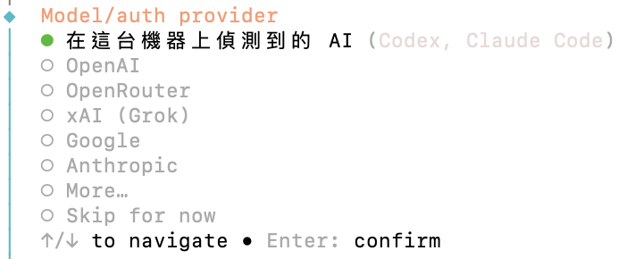
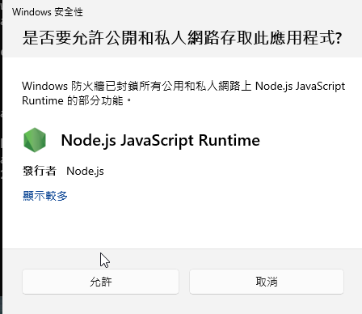

☁️ Part A：申請 Google AI Studio 金鑰（連接雲端大腦）本工作坊採用 Google Gemini 雲端模型 當助理的大腦：運算在 Google 的伺服器上進行，學員筆電不需要獨立顯卡。只要一個個人 Gmail 就能免費申請，不需要綁信用卡。這一步只用瀏覽器，安裝軟體前就可以先做。
1. 建立專案與 API 金鑰
用個人 Gmail 登入： 打開 aistudio.google.com 。請用個人 Gmail，不要用學校帳號 ；學校帳號可能被管理員限制，無法建立專案。先建立專案： 左側選單點 Projects ➔ Create project ，名稱自訂（例如 openclaw）。一定要先建專案 ，否則下一步會出現「No Cloud Projects Available」與權限錯誤。建立金鑰： 左側選單點 API Keys ➔ 右上角 Create API key ➔ 選剛建立的專案 ➔ Create key 。
複製金鑰： 金鑰建立後畫面不會直接顯示，要點該列右側的複製圖示 （兩個方框疊在一起）才能取得完整金鑰。先貼到記事本暫存，Part B 步驟 3 會用到。確認是免費方案： Billing Tier 欄位要顯示 Free tier 。旁邊的 Set up billing 是綁信用卡的入口，不要點 。
金鑰等同密碼
不要截圖、投影、貼到聊天室、簡報或公開儲存庫。不小心外流時，到 AI Studio 的 API Keys 頁刪除這把金鑰，再建一把新的。也不要改到 Google Cloud Console 建立金鑰：步驟多、需要服務帳號，而且在 AI Studio 以外建立的專案，可能要先通過驗證才能使用免費額度。
2. 認識免費額度
在 AI Studio 左側點 Rate Limit ，再打開右上角 All models 開關，就能看到每個模型的額度。課堂使用 Gemini 3.5 Flash Lite 當主模型、Gemini 3.1 Flash Lite 當備援；兩者各有獨立的免費額度，主模型撞到上限時，OpenClaw 會自動改用備援模型。
模型 每分鐘請求 每分鐘 token 每日請求 課堂用途
Gemini 3.5 Flash Lite 15 25 萬 500 主模型 Gemini 3.1 Flash Lite 15 25 萬 500 備援 Gemini 3.8／3.6／3／2.5 Flash 5 25 萬 20 每天太少，不要用 Gemma 4 26B／31B 30 1.6 萬 14,400 單次請求就接近上限 Gemini Pro 系列 0 0 0 免費方案不能用
以上為 2026/11/5 查詢的免費方案額度；Google 可能調整，以自己 Rate Limit 頁顯示的為準。
怎麼看 Rate Limit 頁
頁面標題是 Rate limits by model ，每個模型一列，模型依名稱排序，Gemini 3.5 Flash Lite 在清單偏下方。右邊三欄就是額度，每格寫成「用量 / 上限 」，前面有一條進度條：
RPM ：每分鐘請求次數，例如 11 / 15 表示一分鐘內最多用到 11 次，上限 15 次。TPM ：每分鐘 token 數，例如 165.46K / 250K。這一欄最容易滿，進度條接近滿格時，就是該輸入 /new 的訊號。RPD ：每天請求次數，例如 43 / 500。
上限寫 0 / 0 的模型代表免費方案不能用。沒打開 All models 時，只會列出用過的模型。
名氣大的不一定適合： 一般 Flash 版免費方案每天只有 20 次，OpenClaw 聊幾輪就會用完，一定要用 Flash Lite 。表格顯示的是「最高峰」： 用量欄是過去 28 天的最高紀錄，像汽車的「最高時速紀錄」，不是即時時速表。每天下午 4 點重置： 每日額度在美國太平洋時間午夜重置，冬令時間是台灣時間下午 4 點（夏令時間 3～11 月初是下午 3 點）。每人額度獨立： 額度以專案計算，每位同學用自己的 Gmail 與專案，彼此互不影響。撞到上限不會被收費： 只會被暫時擋下，不會扣款也不會停權；OpenClaw 會冷卻約 30 秒再試。真正的瓶頸是每分鐘 token： 每次呼叫都會把整段對話重送一次，對話越長越容易撞到。對話太長時輸入 /new 開新對話。
💡 只輸入虛構資料： Google 免費方案送出的內容可能被用於改善 Google 的產品。課堂練習一律使用教材裡的虛構資料，不要輸入真實姓名、學號、電話或任何個資。
⚙️ Part B：核心軟體安裝與首次啟動課堂版本基準： OpenClaw 需要本機 Node.js 與 npm；課堂版本檢查基準為 Node 24.16+（24.x）或 26.1+（26.x），官方建議 Node 26；其他版本請由助教確認。如需升級 Node，請在安裝或更新 OpenClaw 之前完成。OpenClaw 課堂固定版本為 2026.10.2，模型固定為
google/gemini-3.5-flash-lite。啟動後以
openclaw health 檢查 Gateway；Day 2 另依
唯讀設定 限制權限。
1. 必要基礎套件安裝 (Node.js, Git)
請依你的作業系統，由上而下逐步完成 ，每一步都做完再做下一步：
macOS 安裝
安裝 Homebrew（已安裝可跳過）： 打開「終端機 (Terminal)」，輸入 brew -v。有印出版本號代表已安裝；沒有的話到 brew.sh 複製安裝指令貼到終端機執行。過程需輸入電腦密碼並下載 Apple 開發者工具。執行 Homebrew 的 Next steps（剛裝 Homebrew 才需要）： Homebrew 裝完後，畫面最後會列出「Next steps」指令，請照著複製執行，再把終端機完全關閉重開；否則會找不到 brew。安裝 Node.js 與 Git： 輸入下列指令。不要用 nodejs.org 的 .pkg 安裝檔 ，之後 npm install -g 會因權限不足失敗。
brew install node git
關閉終端機，重新開一個： 按 ⌘ + Q 完全結束「終端機」，再重新打開。確認安裝成功： 逐行輸入，每一行都要印出版本號：
node -v
npm -v
git --version
另外看 node -v 的版本：v24.16 以上的 v24.x，或 v26.1 以上的 v26.x 才符合課堂要求（例如 v24.20.0 可以，v22.x 或 v25.x 不行）。不符合請舉手找助教。
⊞ Windows 安裝
打開 PowerShell： 按開始鍵，輸入 PowerShell 後按 Enter。安裝 Node.js： 輸入下列指令；跳出「是否允許變更」時按「是」。沒有管理員權限的電腦請找助教。
winget install OpenJS.NodeJS.LTS --source winget
安裝 Git： 輸入：
winget install Git.Git --source winget
允許 PowerShell 執行指令碼： Windows 預設會擋住 npm，出現「因為這個系統上已停用指令碼執行」。輸入下列指令，出現確認提示時輸入 Y 按 Enter；只影響自己的帳號，不需要管理員權限。
Set-ExecutionPolicy RemoteSigned -Scope CurrentUser
關閉所有 PowerShell 視窗，重新開一個： 剛裝好的程式要在新視窗才找得到；沒有重開，之後會出現「無法辨識 'npm' 詞彙」。確認安裝成功： 在新的 PowerShell 逐行輸入，每一行都要印出版本號：
node -v
npm -v
git --version
成功時的畫面如下（示意）。版本號可能不同，只要三個指令都印出版本號、沒有紅色錯誤訊息就算通過。另外看 node -v 的版本：v24.16 以上的 v24.x，或 v26.1 以上的 v26.x 才符合課堂要求（例如 v24.20.0 可以，v22.x 或 v25.x 不行）；不符合請舉手找助教。
PS C:\Users\你的名字> node -v
v24.20.0
PS C:\Users\你的名字> npm -v
11.19.0
PS C:\Users\你的名字> git --version
git version 2.55.0.windows.5
2. 安裝 OpenClaw 課堂固定版本
安裝課堂固定版本： 輸入下列指令，避免自動裝到講師尚未試跑的新版。--allow-scripts 讓 OpenClaw 與相依套件完成安裝設定，請完整複製、不要省略。約需 1–2 分鐘。
npm install -g openclaw@2026.10.2 --allow-scripts=@google/genai,esbuild,koffi,protobufjs,openclaw
確認安裝成功： 最後出現 added … packages 或 changed … packages 就是成功。npm warn deprecated 與 looking for funding 可以忽略；若出現 npm notice New major version of npm available，不要升級 npm ，課堂以目前版本為準。再輸入下列指令，應印出 2026.10.2：
openclaw --version
3. 執行設定精靈、指定模型並第一次對話
準備好 Part A 複製的金鑰，輸入：
openclaw onboard
👀 設定精靈的題目（照著選就對了）
畫面上的題目與灰色虛線框是會看到的文字，不用複製或輸入 ；請照「你要做」用方向鍵和 Enter 選擇。題目順序可能略有不同，認題目文字即可。
安全免責聲明
你要做： 只是說明文字，看完繼續即可。OpenClaw 啟用工具後能讀檔與執行動作，所以 Day 2 會再用唯讀設定限制權限。
你想如何開始？
你要做： 選 快速開始（建議） 。
What would you like to create?
你要做： 選 One agent 。A small team 會讓多個助理輪流呼叫模型，很快就會撞到額度上限。
Model/auth provider
你要做： 用 ↓ 移到 Google 按 Enter。不要直接按 Enter 選第一個 「在這台機器上偵測到的 AI」：那是電腦上已登入的其他 AI 工具（例如 Codex、Claude Code），每台電腦顯示的都不一樣。

游標預設停在第一個，請按 ↓ 移到 Google 再按 Enter
安裝插件？（若出現）
你要做： 選 從 npm 下載 。
Enter API key
你要做： 貼上 Part A 複製的金鑰後按 Enter。畫面只會顯示圓點，這是正常的。
若出現「Provider 正在限流」或 429
你要做： 只要畫面寫著 Credentials saved，就代表金鑰已經存好。畫面會回到 Model/auth provider 選單，這次用 ↓ 移到最下面的 Skip for now 按 Enter 繼續；模型在下一段另外指定。
× gemini-api-key：Provider 正在限流。請稍後重試。
Credentials saved; default unchanged. Google Generative AI API
error (429): You exceeded your current quota ...
其餘題目（頻道、DM 策略、管理員等）
你要做： 一律先略過（Skip／Set up later）。Telegram 在 Day 2 再設定。
等待期間 Windows 跳出「Windows 安全性」防火牆視窗： 詢問「是否要允許公用和私人網路存取此應用程式?」（Node.js JavaScript Runtime），請按
「取消」 。終端機會繼續執行，不用等它；Dashboard 與對話畫面只在自己電腦內連線（
127.0.0.1），取消不影響使用；按「允許」會讓同一個 Wi-Fi 的其他人有機會連到你的 OpenClaw。

看到這個視窗請按右下角「取消」
精靈結束時若顯示 service installation skipped，代表背景服務還沒裝好，下一段會補裝。
指定模型、備援與背景服務
精靈不一定會選到課堂用的模型，請逐行輸入下列指令手動指定（# 開頭的是說明，不用輸入）：
# 指定主模型（每天 500 次）
openclaw models set google/gemini-3.5-flash-lite
# 加上備援模型（另一份每天 500 次）
openclaw models fallbacks add google/gemini-3.1-flash-lite
# 確認 gemini-3.5-flash-lite 那一列的 Tags 欄位出現 default
openclaw models list --provider google
# 確認背景服務
openclaw gateway status
gateway status 的 Runtime 不是 running 時，再輸入下面兩行安裝背景服務並檢查：
openclaw gateway install
openclaw health
為什麼模型名稱要寫版本號？
不要改用 gemini-flash-lite-latest。latest 會隨 Google 改版自動換成別的模型，額度也可能跟著變；道理和課堂固定 OpenClaw 版本相同。
第一次對話：幫助理取名字
打開對話畫面： 輸入：
openclaw
等狀態列出現 connected | idle： 助理不會主動開口，要自己先說話。底部狀態列出現 gemini-3.5-flash-lite 代表已連上雲端模型。輸入開場白： 複製下面這句貼上後按 Enter，名字可以換成你想取的：
你好，請用繁體中文跟我對話。我想幫你取個名字叫「小東」
加上「請用繁體中文」，模型才不會有時用英文或簡體中文回覆。
耐心等候 30–60 秒： 第一次對話時，OpenClaw 會建立助理的名字與個性檔案，連續呼叫模型約 15 次。若出現「The AI service needs a short break」，是撞到每分鐘上限，等 30 秒再送一次 即可。看到助理用新名字回覆，就代表首次設定完成。
助理回覆後，畫面底部的狀態列類似這樣：
connected | idle
agent main (main) | session tui-… | gemini-3.5-flash-lite | tokens 15k/1.0m (1%)
4. 打開網頁版控制台（Dashboard）
課程接下來都在網頁版操作。終端機的對話畫面不用關，另外開一個視窗執行：
另開一個終端機： 在「終端機」按 ⌘ + N 開新視窗。 按開始鍵輸入 PowerShell 再開一個新視窗。 原本顯示對話的視窗保留著，不要在那裡輸入指令（那裡打的字會傳給助理）。打開網頁版： 在新終端機視窗輸入：
openclaw dashboard
瀏覽器會自動打開 http://127.0.0.1:18789/#token=… 的網頁。網址裡的 token 是登入憑證，不要截圖或分享給別人。
確認成功： 網頁中間看得到剛才在終端機和助理的對話（標示「透過 TUI」），下方輸入框旁顯示 Gemini 3.5 Flash Lite，就代表網頁版和雲端模型都連上了。之後在下方輸入框打字，就能直接和助理對話。回答上方的「1 次讀取」之類的標籤可以點開，看助理實際用了哪些工具。
網頁打不開或要求輸入 Token？
不要自己在瀏覽器輸入 localhost:18789，那樣會缺少 token；請一律用 openclaw dashboard 開啟。仍打不開時，執行 openclaw health 檢查背景服務，把結果交給助教。
左上角助理名字變成奇怪的字？
那是 Chrome 自動翻譯造成的（例如把英文名字翻成中文）。在網址列的翻譯提示選「一律不翻譯這個網站」即可。
🔧 Part E：常見問題排錯 (FAQ)
Q1：Windows PowerShell 提示「在此系統上已停用指令碼執行」？
此為 Windows 預設安全性原則。不需要管理者權限，在 PowerShell 貼上下列指令按 Enter 後輸入 Y 確認即可：
Set-ExecutionPolicy RemoteSigned -Scope CurrentUser
Q2：執行時報錯「Error: required dependencies are missing (git)」？
OpenClaw 在背景管理套件時需要 Git 工具：
winget install Git.Git --source winget
安裝後請將終端機全部關閉重新開啟。
Q3：網頁 Web UI 畫面出現「需要驗證」或要求輸入 Token 密碼？
這是因為直接手動輸入 localhost:18789 時網址缺少安全 Token。請直接在終端機輸入：
openclaw dashboard
系統會自動開啟帶有完整 Token 驗證的專屬網址。
Q4：提示「Gateway not reachable」或 Port 18789 被佔用？
代表先前執行的服務未正常釋放埠號。請先重啟或釋放：
# 重新啟動 Gateway
openclaw gateway restart
# 仍被佔用時，強制釋放 Port 18789
lsof -ti:18789 | xargs kill -9 2>/dev/null
# 仍被佔用時，強制釋放 Port 18789（找出佔用該埠的程式並結束）
Get-NetTCPConnection -LocalPort 18789 -State Listen -ErrorAction SilentlyContinue |
ForEach-Object { Stop-Process -Id $_.OwningProcess -Force }
Q5：AI Studio 顯示「No Cloud Projects Available」或沒有權限建立金鑰？
通常是還沒建立專案，或用了學校帳號。先到左側 Projects ➔ Create project 建立專案，再回 API Keys 建立金鑰；學校帳號被限制時，改用個人 Gmail。
Q6：設定精靈驗證金鑰時出現 429 或「Provider 正在限流」？
精靈測試金鑰時剛好撞到限流。只要畫面寫著 Credentials saved，金鑰就已經存好；在回到的 Model/auth provider 選單選 Skip for now 繼續，再照 Part B 步驟 3「指定模型」 用 openclaw models set 指定模型。
Q7：出現「The AI service needs a short break」？
這一分鐘的 token 額度用完了，不會被收費。等 30 秒再送一次 即可。如果很常出現，代表對話已經很長（每次都會把整段對話重送），在對話框輸入 /new 開新對話。
Q8：Gateway 無法重啟（GATEWAY_RESTART_PREPARATION_REFUSED 或 SERVICE_DEFINITION_UNKNOWN）？
多半是重跑精靈後，背景服務的設定前後不一致。執行下列指令，修復提示都選 Yes ：
openclaw doctor
Q9：回答正常，但下方一直有灰色的 run error？
那是先前錯誤留下的訊息，不影響目前的回答。在對話框輸入 /new 開新對話就會清除。
Q10：今天額度用完了？
到 AI Studio 左側 Rate Limit 查看。主模型與備援模型各有每天 500 次，一般上課用不完；真的用完時，台灣時間下午 4 點會重置，期間請和旁邊同學共看。